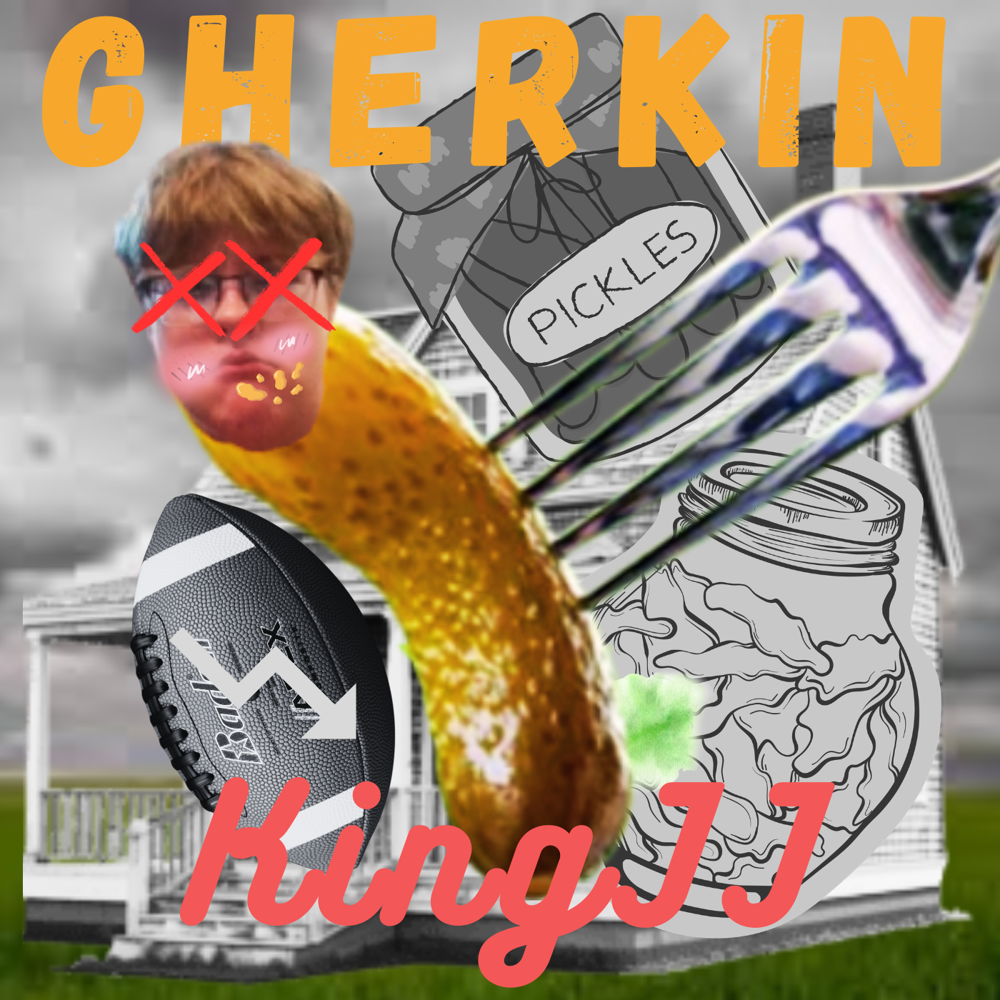

Lyrics
Gherkin
KingJJ • February 2026
[Intro] This just in: the grave of, who people call “KingJJ,” has been found open “Ayo, give me the mic!” What’s up, y’all? It’s yo’ boy again Gherkin, you better watch out (Man) [Verse] Oh, come on, Gherkin, I know you always jerkin’ ’Cause you never see a lady lurkin’ Lately learnin’, you just a master debater Well, I’m the mater of haters, and you just be a... [beep sfx] Yeah, probably better cut that out Like you should be with your diet, just try it out Although I know one thing you won’t do And that is ever try to work it out (Ooh) And lately (What), I’ve been (Huh) Watchin’ (Yeah), learnin’ (Uh) Just enough to see (See) that You just be (Be) Tryin’ so hard to be tough But I know it’s gotta be hard when You’re hitting those aerial shots, huh? (Get it?) (Jordon, we are built the same) Uh, no, we ain’t Just listen here, Girk I may be a potato, but you round as a donut And, unlike you through a door, that fits (Why?) ’Cause you look for attention like them sprinkles on top (Up top) Now I know that you think that we got some chemistry “But lemme see,” ooh, nope, sorry buddy I don’t really tend to swing that way, just you And Gherkin, I know you depressed But never pop a Perc inside of a Perkins And don’t lace it, just keep bracin’ it ’Cause if you die, then how are you gonna keep Filling up your mouth with all that food? And plus, McDonald’s needs you to buy (Number one customer) And Arby’s is calling for you (We have the meats) Just never forget yo’ girl, the Dairy Queen If you ever do, there will be a giant blizzard Don’t worry ’bout your ego, you’ll remain seen And, oh come on, Girk, don’t be obscene! We don’t need to see your pants dropped Nor that one millimeter defeater To be a repeater to know that you fall short In expectations, but in reality, you double-C thick (Thick!) So don’t worry about it (What the hell, JJ?) Oh, you know, a man’s gotta do what he’s gotta do To make a livin’ against you (Ooh) Yo, I just remembered another thing (The hell?) You talk a lot, even more than me That’s the only thing you got on me Bet you wish you had that inch more On your wee-wee, oh tee-hee Chace, I love you, bro But you won’t be worth much Just a small hunch, but only thing worth numbers Is that phone number on the scale, yo [Outro] Man, do you have any last words, Gherkin? (Hahahaha) Life is like a box of chocolates, you never know what you’re gonna get Man, we’re still talking about food here Haha, just playing, Girk, you know I love you